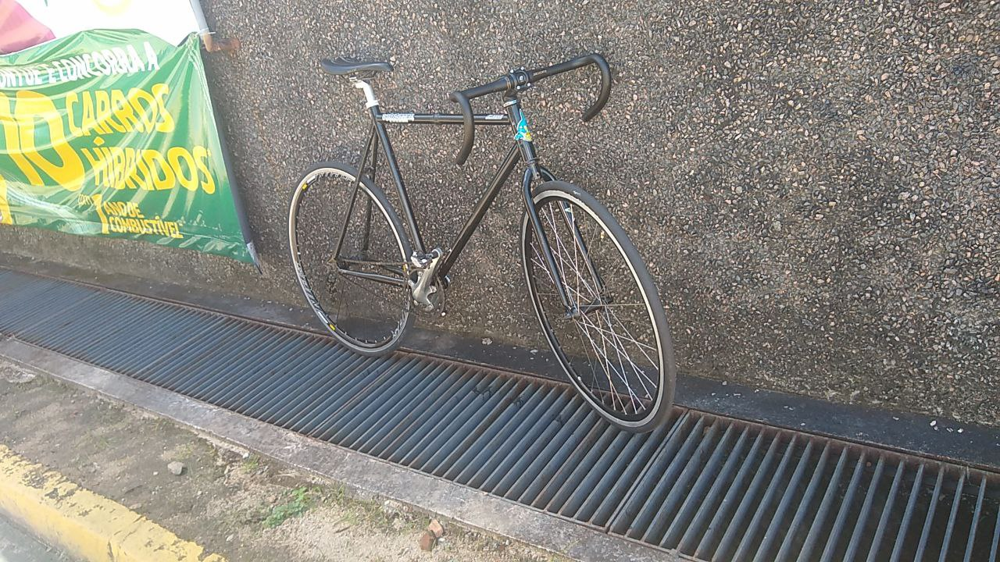
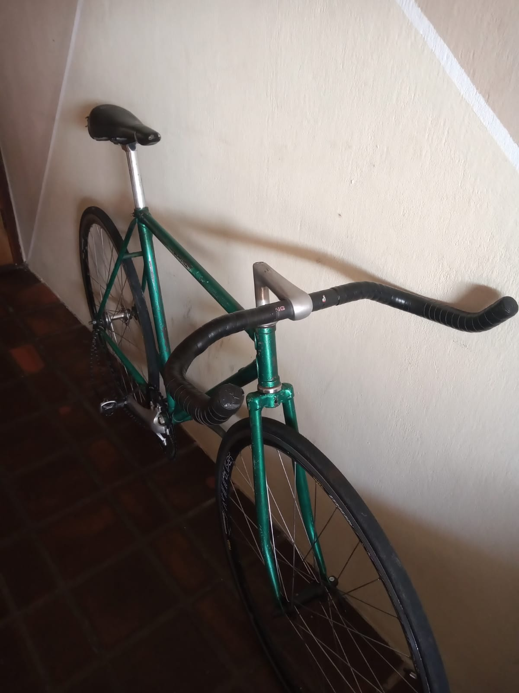

APRESENTAÇÃO
Olá! Meu nome é Filipe e sou um estudante apaixonado e dedicado em busca de desafios e oportunidades para crescer e desenvolver minha carreira. Este é meu portfólio profissional desenvolvido em HTML e CSS, onde pretendo compartilhar um pouco sobre quem sou, habilidades, experiências que tenho e curiosidades sobre mim.
HABILIDADES
Atualmente faço o curso de ciência da computação na UFPE, tenho ensino médio técnico em programação de jogos digitais, e foi durante esse período que me interessei na área de TI e desenvolvi algumas habilidades para a área, como trabalhar em equipe, solucionar problemas de maneira objetiva entre outros.
HOBBIES
Graças ao contato que tive com robótica no ensino médio, tenho um certo fascínio pela área da eletrônica, em especial projetos com arduino. Outro grande hobbie/paixão da minha vida, a qual dedico uma parte deste portfólio, são as bicicletas. Com elas tenho a possibilidade de enxergar o mundo de uma maneira diferente e experimentá-lo de forma mais divertida. Um de meus projetos é a criação de um site-guia sobre bicicletas, que tire diversas dúvidas acerca desse mundo vasto, abaixo uma demonstração de uma área desse futuro site, a área de "bike check".Esta seção representa parte do projeto em produção sobre bicicletas. Aqui, temos o "bike check" que nada mais é que a descrição dos componentes de cada bicicleta, nesse caso resumido a alguns componentes.

BIKE ATUMALACA
- Frameset: eight-bikes
- Cockpit: avanço absolute 80mm, guidão drop zoom 40mm
- Trasmissao: central absolute hollowtech2, pedivela integrado shimano tiagra, pedal clip shimano m520, coroa genérica 44d, pinhão sevenhundred 13d.
- Rodas: cubo traseiro flipflop yamada, cubo dianteiro shimano, aros vzan spin 36f, pneus dsi 700x23.

BIKE LIAMBA
- Frameset: caloi-10 coração
- Cockpit: avanço kalloy 100mm, guidão bull horn 42mm
- Trasmissao: central shimano hollowtech2, pedivela integrado shimano sora, pedal clip wellgo, coroa deckas 52d, pinhão generico 16d.
- Rodas: cubo traseiro flipflop yamada, cubo dianteiro shimano, aros vzan spin 36f, pneus dsi 700x23.